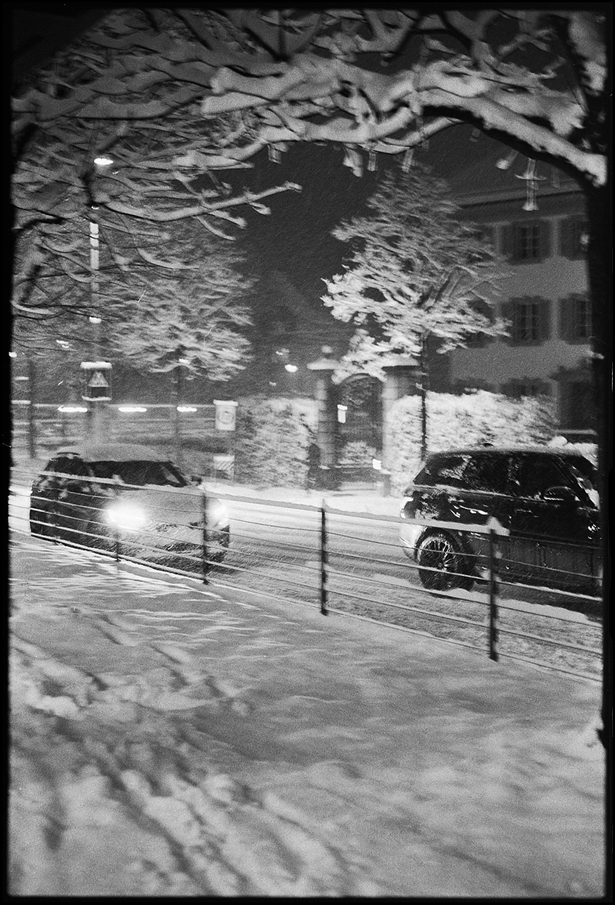
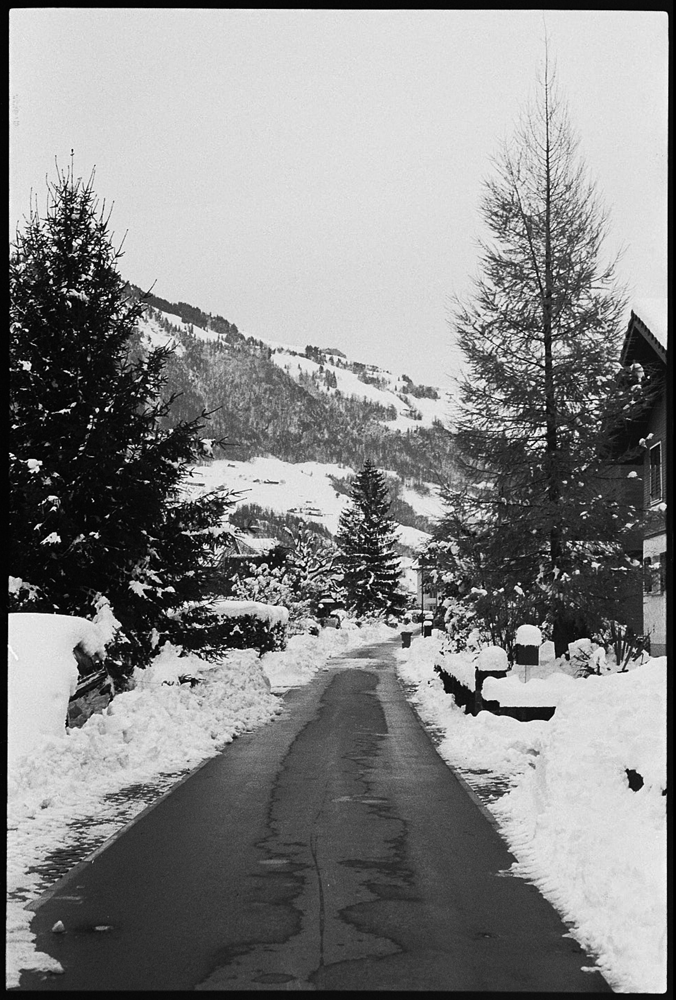
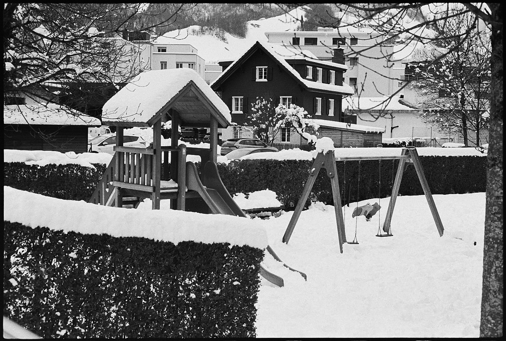
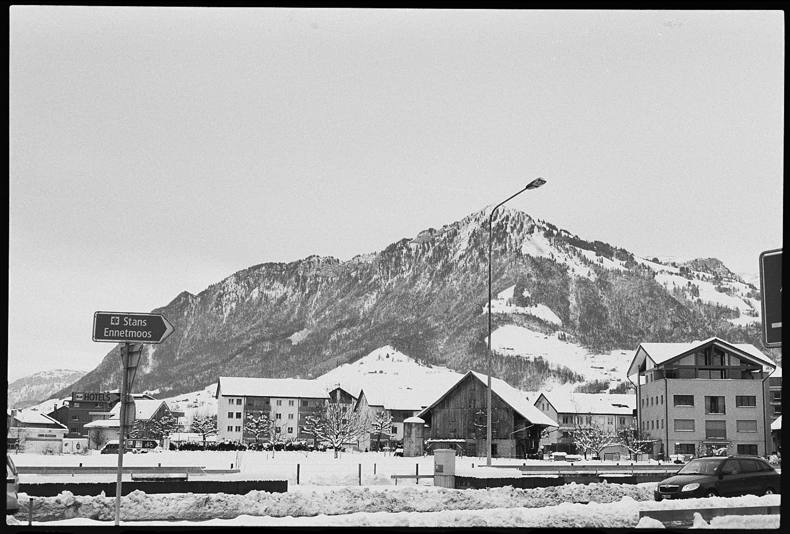
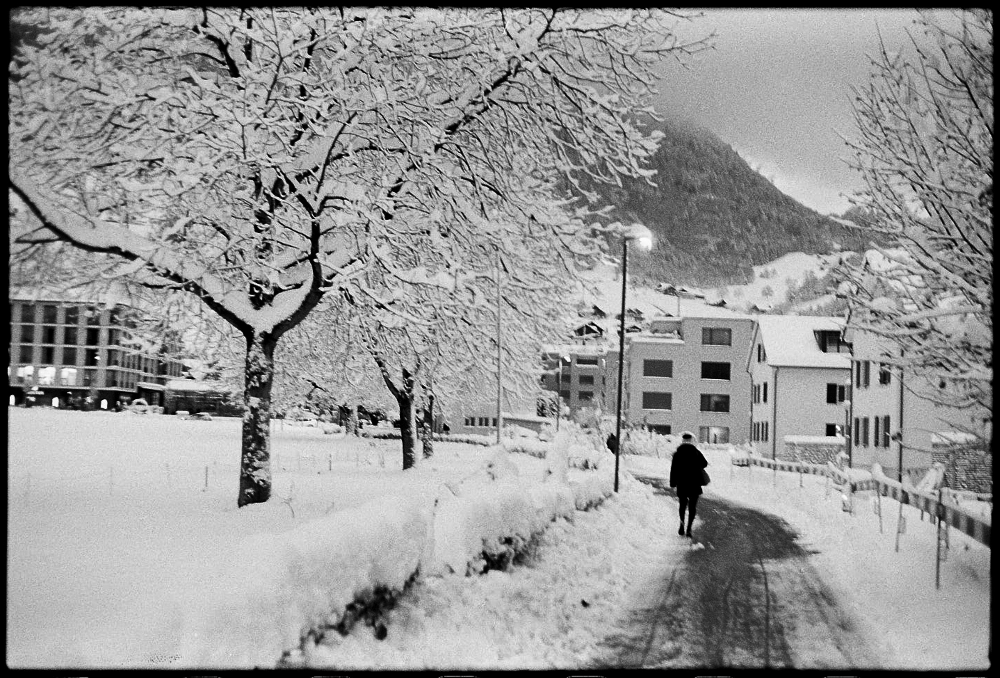
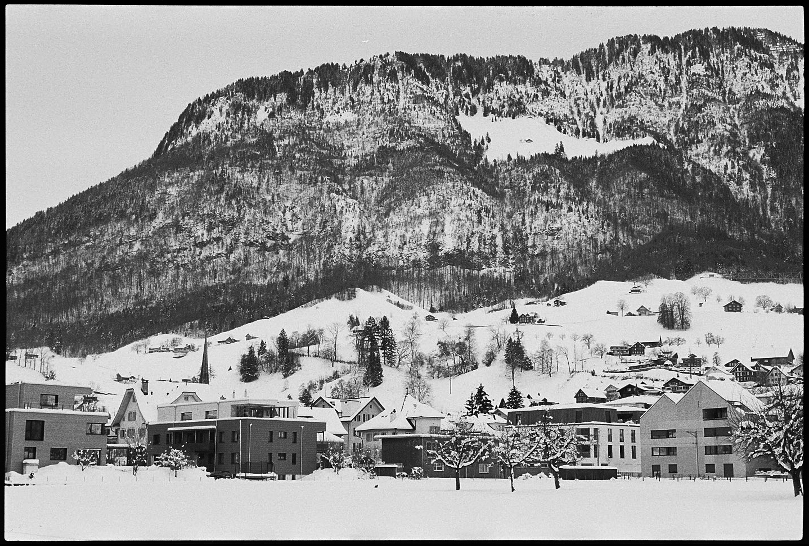
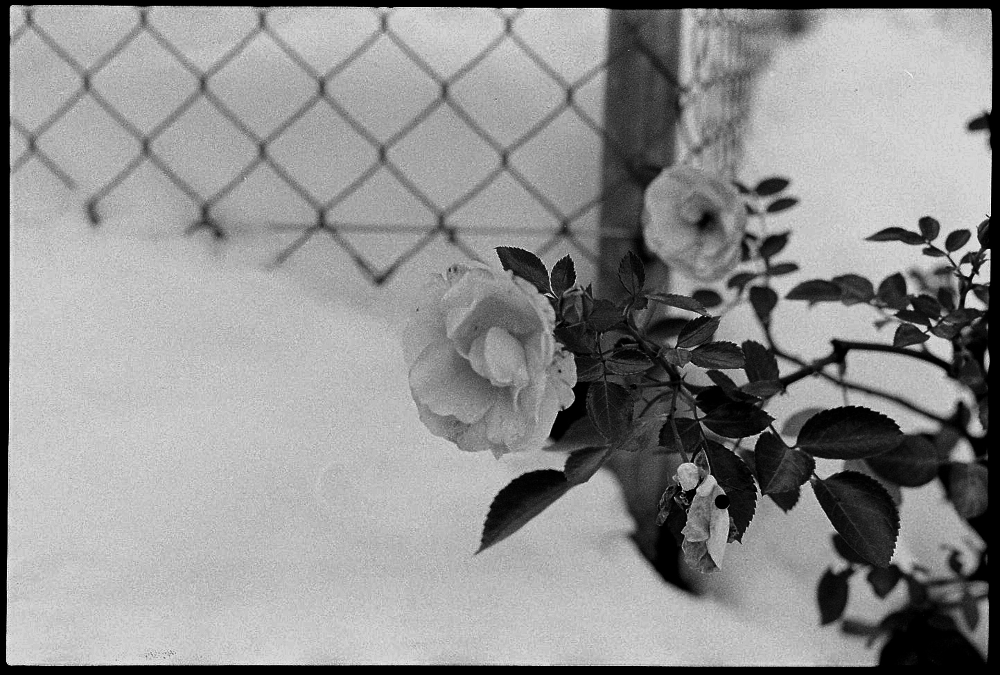
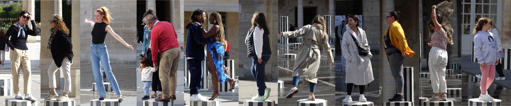

Form in Focus
How can an everyday object be restaged?
A bicycle handlebar becomes a sculpture; light and shadow shape its lines. In this photographic study, staging, perspective and control are central, as is the question of how material and movement communicate within the image. Through batch processing in ring photography and precise lighting, a richly detailed image emerged. A new technique was discovered, connected with something familiar. Colour, form and focus thereby become decisive design tools.
Analogue Photography
How does one’s perspective change when every shot counts?
Winter landscapes become the setting for light, composition and technique. The analogue camera compels conscious decisions: manual adjustment of aperture, exposure time and focus, careful planning of each shot and patient waiting for the perfect moment. Unlike digital mobile phone photos, this creates a series that makes intentionality and mindfulness visible. Limited film rolls convey the special value of each individual photograph.







Moments Présents
How does the city move when it pauses?
In the Jardin du Palais Royal, paths become lines, gestures become signs, movements become emotions. I observe how people draw the space with steps, glances and fleeting encounters. Their rhythm speaks of proximity and distance, of calm and restlessness. From these moments emerges a visual study of movement and perception.

<
>